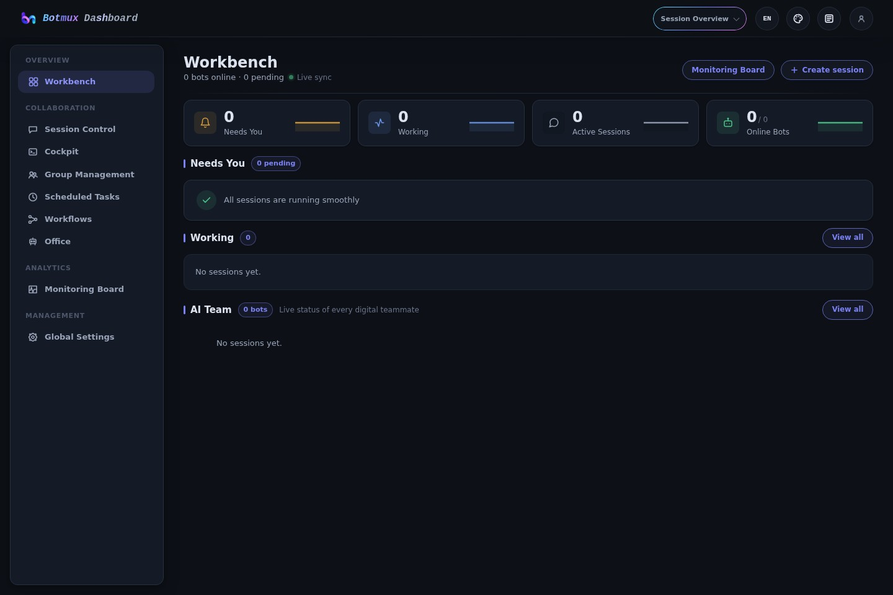

Botmux × Midscene
1/18 cases passed · 3 failed · 0 skipped · 14 not run
| Case | Project | Status | Duration | Node screenshot | |
|---|---|---|---|---|---|
| ✅ | Navigate the core read-only Dashboard pages | dashboard-smoke | success | 41.6 s |  |
| ❌ | Claude basic bot flow | feishu-browser | failed | 339.2 s | Not available |
| ❌ | Codex basic bot flow | feishu-browser | failed | 264.0 s | Not available |
| ❌ | Codex prompt submission | feishu-browser | failed | 238.1 s | Not available |
| ⏸️ | Aiden basic bot flow | feishu-browser | not-run | — | Not available |
| ⏸️ | CoCo basic bot flow | feishu-browser | not-run | — | Not available |
| ⏸️ | OpenCode basic bot flow | feishu-browser | not-run | — | Not available |
| ⏸️ | Bot reply smoke test | feishu-browser | not-run | — | Not available |
| ⏸️ | Aiden and CoCo collaboration | feishu-browser | not-run | — | Not available |
| ⏸️ | Streaming card lifecycle | feishu-browser | not-run | — | Not available |
| ⏸️ | Consecutive message queue | feishu-browser | not-run | — | Not available |
| ⏸️ | Group message without a mention | feishu-browser | not-run | — | Not available |
| ⏸️ | Group message with one bot mention | feishu-browser | not-run | — | Not available |
| ⏸️ | Group chat topic reply | feishu-browser | not-run | — | Not available |
| ⏸️ | Private chat topic reply | feishu-browser | not-run | — | Not available |
| ⏸️ | Mixed image and text card | feishu-browser | not-run | — | Not available |
| ⏸️ | Scheduled task remains in its source thread | feishu-browser | not-run | — | Not available |
| ⏸️ | Web terminal opens from the streaming card | feishu-browser | not-run | — | Not available |